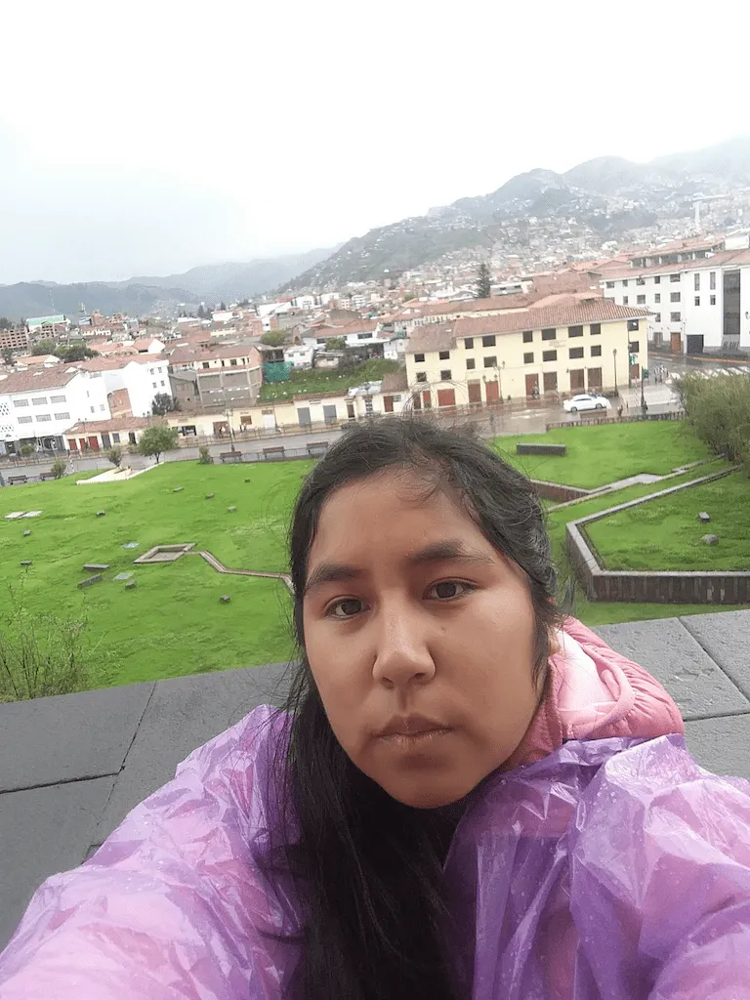

Tasha Rosa Vidal Bravo | WDD130
Hello! My name is Tasha Vidal, and I'm from Lima, Peru. I'm 27 years old and enjoy drawing, video editing, and serving in the temple as a temple worker. It's wonderful to have two temples here in Lima. I also served a mission. I was the first person in Peru to be called as a full-time service missionary. I learned a lot. I served in many community organizations, in the Peru Lima East Mission, and then I underwent changes and became part of the Peru Lima North Mission, along with the Peru Lima West Mission. I served in both missions at the same time. It was a somewhat difficult experience, but the Lord helped me because He needed me in both places.